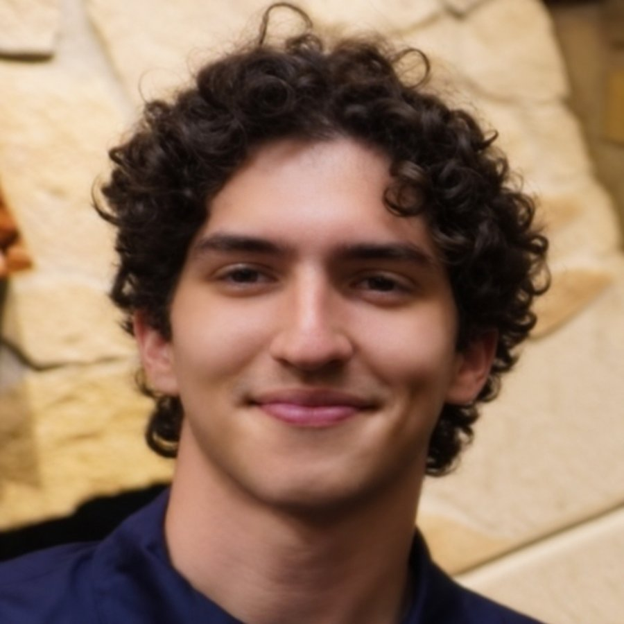
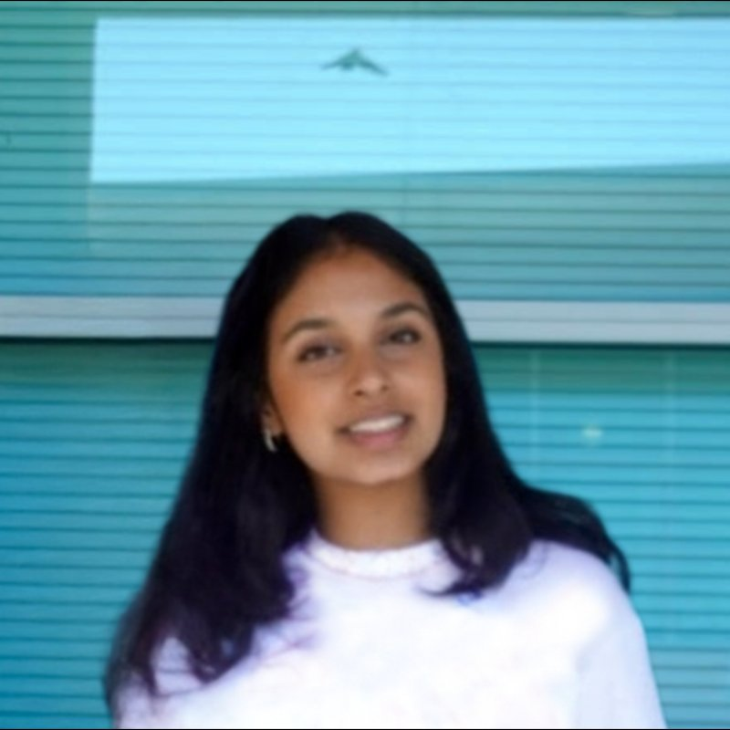
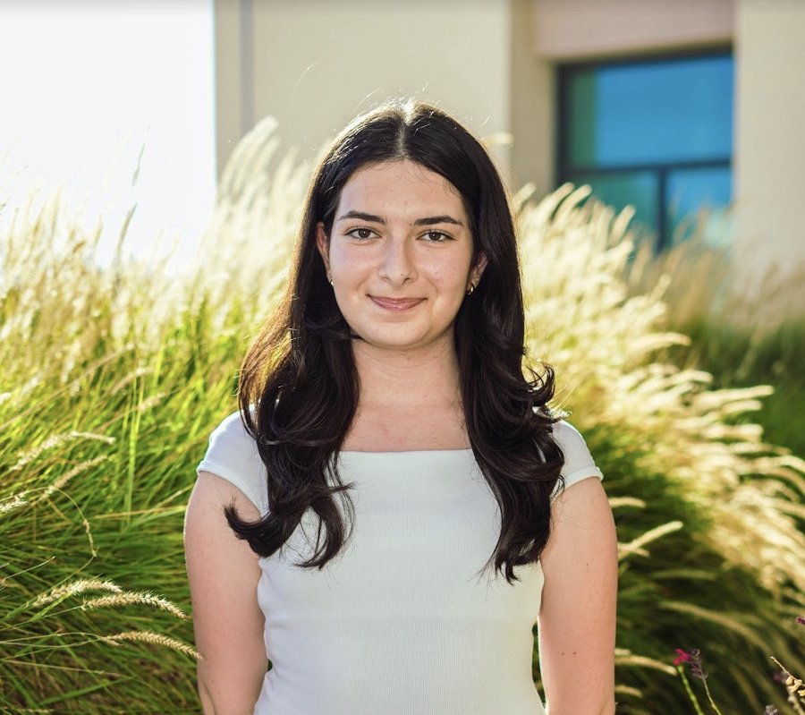
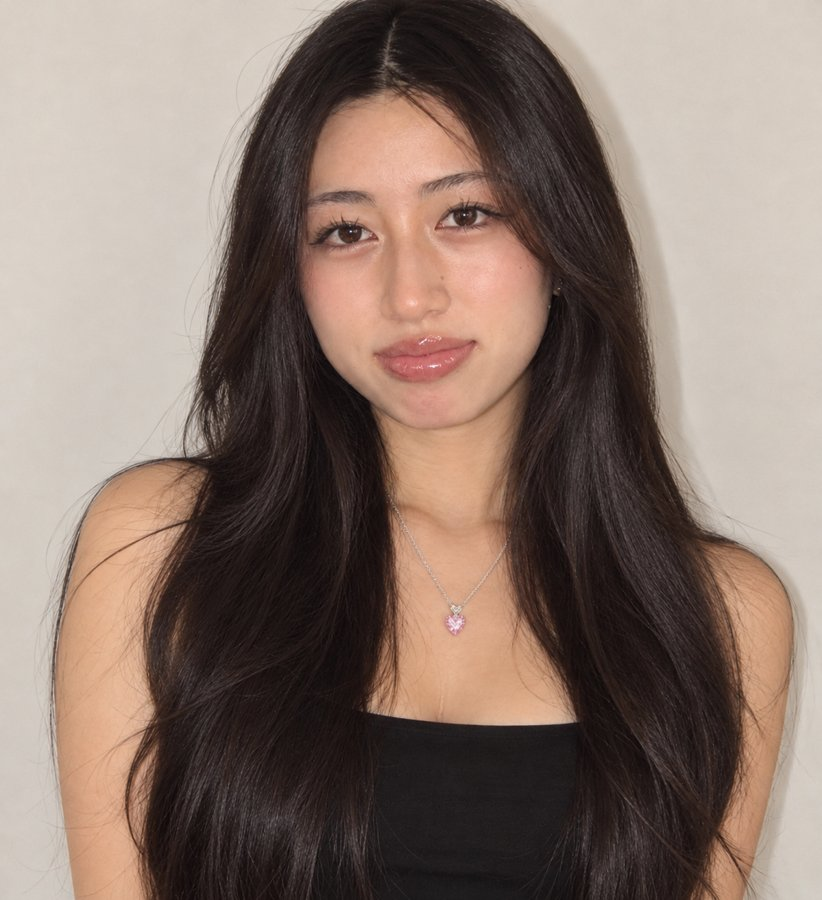

Meet the Team
Five SoCal community college students from different majors working together on accessibility in Irvine. We bring engineering, computer science, social science, and language expertise to make city services more accessible for every family.
Our Team
-

NavigationKareem Tadros
Computer Science, IVC
Kareem Tadros is an Honors Computer Science student at Irvine Valley College, where he serves as ASIVC Senator of DEIA and VP of the CS Club. He founded TransferLens, a transfer-planning platform for community college students, and leads organizing for HackCC, California’s largest community college hackathon.
LinkedIn -

EngineeringShrika Sachinkumar
Electrical Engineering, IVC
Shrika Sachinkumar is an Electrical Engineering and Computer Science student at Irvine Valley College and an undergraduate research assistant in assistive robotics at UCLA. She builds hands-on assistive technology, including an ASL-translating glove and a gesture-based game controller for users with limited mobility, and brings experience in embedded systems, PCB design, and product management.
LinkedIn -

EngineeringKayla Sarkissian
Electrical Engineering, GCC
Kayla Sarkissian is an Electrical Engineering student at Glendale Community College, where she serves as President and Co-Founder of the Society of Women Engineers (SWE) collegiate section. She is also an intern with the GoBabyGo program and independently develops assistive technology devices to improve accessibility for people with disabilities.
-

AdvocacyPresly Tong
Sociology, IVC
Presly Tong is a Sociology student at Irvine Valley College with a strong interest in law, community advocacy, and public policy. Through her involvement in student leadership, youth initiatives, and community engagement, she hopes to expand her impact and create meaningful opportunities for underrepresented communities.
-
Language
Hagi Tran
Linguistics, IVC
Hagi Tran is a Linguistics student at Irvine Valley College focused on cultural preservation and language access. Hagi digitized and archived manuscripts at Naksa Monastery in Nepal and brings a technical background as former Lead Engineer at RevisionDojo (YC F24), where Hagi helped build some of the first AI-powered lessons.
LinkedIn
How We Work Together
An interdisciplinary, community-centered team that combines technical, social, and language expertise — and listens to Irvine residents to build practical, inclusive solutions.
-
Interdisciplinary Collaboration
Different majors, shared goal: accessible, usable city services.
-
Community Listening
We learn from Irvine residents and families to understand real needs and experiences.
-
Real-World Impact
Turn insights into practical improvements for the city and the community.